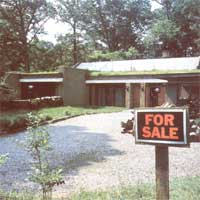

For the uninitiated house-shopper, a bit of "earthy" knowledge helps when you're...
From the forthcoming A Practical Guide to Earth Sheltered Housing by Mary Rollwagen, Susan Taylor, and T.
Lance Holthusen.
Copyright 1983 by Van Nostrand Reinhold Company, Inc. Used by permission.
Earth-sheltered housing is no longer an oddity. In fact, even though the concept of underground dwellings has been popularized only over the past decade or so, thousands of subterranean homes exist today. Unfortunately (for the average house-shopper), much of the material written about earth-sheltered structures is directed to the professional ... or to folks who are at least acquainted with the technical aspects of such construction. And that's why we decided to excerpt this chapter from A Practical Guide to Earth Sheltered Housing by Mary Rollwagen,
Susan Taylor, and T. Lance Holthusen. The authors-whose consulting firm, TLH Associates, handles many of the public education programs of the University of Minnesota's Underground Space Association--have specifically directed their attention toward potential homeowners who don't want to build their own houses, but would prefer to have the task contracted or to buy an existing earth-sheltered structure. Such people, of course, need to be sure they're making a sound investment ... as this is a venture in which mistakes can be very costly.
When most of us want to acquire a conventional home, we find it much quicker to buy an existing home than to build a new one. Most of the defects in a conventional house are reasonably discernible to average consumers.
Buying an existing earth-sheltered house is a different story altogether. Since earth-sheltered houses are so new, few have appeared on the market for resale. It is estimated, however, that somewhere in the neighborhood of five to six thousand homes had been built by 1982. In addition, some speculation homes are always on the market. In the future, then, consumers may increasingly enjoy the option of buying rather than building an earth-sheltered home.
If you should find an earth-sheltered home that is for sale at the right price and quite fits your needs, how do you judge the soundness of its construction? What should you look for in any earth-sheltered home you tour?
STRUCTURAL SOUNDNESS
AND WATERPROOFING
There is no way to probe inside the walls to inspect steel placement or even to ascertain whether the waterproofing system is intact on buried surfaces. Evidence of problems can often be observed in other ways, however.
INTERIOR
Look inside the house. for these signs of leakage or structural problems:
•Cracks in the walls are extremely difficult to hide, even with patching. Cracks could mean a ruptured waterproofing membrane and present or future leaks; they could also indicate uneven settlement of the building or excessive deflection of the roof deck.
• Water stains or moldy smells could signify leaks.
•The insides of ducts may feel wet or slimy-, check by lifting off grilles that cover duct openings and reaching in.
EXTERIOR
On the outside of the house and up on the roof, look for these clues:
• Settlement or ponding water could indicate poorly compacted backfill or inadequate drainage.
• The condition of detailing at the edge of the parapet and around roof penetrations could indicate problems. Is the flashing exposed? In bad condition? Is any waterproofing material exposed?
• Are the retaining walls in good condition? Is there any deflection outward?
• Is there fencing or planting along the roof edge to mark it? A potential liability problem exists if the drop over the front is not protected.
• Is any information available concerning the type of subsoil the house was built in and the level of the water table? Does the owner know?
HEATING AND COOLING SYSTEMS
If there is an active or passive solar heating system, find out how it works. Has the system met the owner's expectations? Does it require frequent manipulation or repair?
Be particularly watchful of a wood-or coal-burning stove: Was it inspected when installed for proper distances from combustible surfaces, adequate insulation protection, and proper air intake and venting? Be sure the chimney stack is self-supporting and not holding any other weight.
CODE COMPLIANCE
Here is where the real purpose of building codes can be put to work for you. Your protection as a second owner, with no control over the initial design and construction, is better assured if codes were met originally. If no codes are in effect for the area, the use of an architect or a reputable builder would reduce your concern. Check the following:
• Fire safety would suggest two building exits, one remote from the other. Bedrooms should have a means of exit other than the door. There should be two smoke detectors, one in the sleeping area and one in the cooking area. To alleviate the hazards from interior fires (from kitchens, overstuffed chairs, drapes), adequate ventilation systems to vent smoke and/or poisonous gases would be desirable. Can firemen get in quickly?
•Electrical wiring should have been done according to codes; there is no reason for installations and connections to have been made any less correctly than in aboveground homes. Ask who did the wiring: If the owner did, was it inspected? Bring in your own expert if you have any doubts.
•Air supply and ventilation in a very tightly enclosed structure must have been provided. How will the use of kerosene heaters or fireplaces affect the fresh air supply? Supplemental or combustion air may be supplied, but check as to whether it is enough. The two air changes per hour specified in the code imply lots of outside air bringing in possibly unfriendly temperatures. Perhaps a strategy for tempering it is available (an air-to-air heat exchanger, for example). Wet rot around windows or condensation collecting on the interior surface of skylights indicates inadequate ventilation of interior humidity.
QUESTIONS TO CURRENT OWNER
•What have the backup utility or heating bills been?
• Have there been any leaks?
•Who designed the house?
• Who built the house? The owners themselves? A reputable contractor?
•Was a soils test done originally, so that the resulting information on bearing capacity could guide the engineering of the design?
•Were there any problems insuring the home?
•What other problems have there been?
•Why are the owners moving?
SUGGESTED CONDITIONS FOR PURCHASE
The insurance question raises an interesting fact about many earth-sheltered houses. Some earth-shelter building companies and owners report that they have been able to negotiate lower insurance premiums than would be paid for similar but conventional homes, because the structure is less vulnerable to fire and storm damage. Several insurance firms have even announced lower rates, usually on the condition that the home was designed by a qualified professional. When inspecting a house for potential purchase, ask whether the plans for the house had an engineer's stamp of approval. Buying a structure that was not professionally engineered could be a risky business.
The National Association of Mutual Insurance Companies (NAMIC) has circulated a list of areas for concern to insurance inspectors considering the underwriting of an earth-sheltered home. NAMIC concluded that, assuming specific areas of concern are found to be satisfactory, earthsheltering is "an insurable risk" if the following conditions are met:
1. The shelter is designed by an architect.
2. The plans are checked and an engineer's stamp of approval is included.
3. Building codes are followed and quality building materials are used by a reputable, qualified contractor.
4. Natural drainage and water table height are adequately determined.
5. The foundation drainage is properly installed.
6. Good waterproofing material is expertly applied.
7. The supplemental heat (wood/coal burner) is properly installed (air intake and venting). Adequate clearance between heating devices and combustible materials must be maintained.
These conditions are sensible ones for a potential buyer to investigate before making a decision.
A design professional may be more astute in spotting trouble than a potential first-time earth-shelter homeowner. Consider hiring an experienced earth-shelter architect or engineer to inspect the property for a couple of hours. Most professionals will charge an hourly fee for such a service-it will be cheap insurance against a possible $100,000 mistake.
Finally, do not rush into this "ready-made" decision any more quickly than you would leap into building a new home. Be sure this earthsheltered house fits your program, is truly as energy-efficient as its owner or builder claims it is, -appeals to your sense of aesthetics, and is located where you want to live.
Compromise, of course, but remember that you have the knowledge to have your dream house built if you still feel that is the better choice.
|
 STAFF PHOTOS [1] Retaining or wing walls should be straight, sound, and moisture-free. [2] Solar heating systems must be designed well in order to function properly. [3] Check the roof and wall flashing at exposed points for signs of deterioration. [4] Interior water stains indicate leaks. |
|
|